好 剧 盘 点
如今电视已经成为现代人家庭生活中不可缺少的一部分，电视剧对人们的生活更是有着巨大的影响。作为整个社会文化产业的一部分，中国电视剧的发展折射了中国社会在20世纪80年代以来发生的方方面面的变化。从电视剧的创作题材、艺术表现手法到受众的欣赏水平、欣赏趣味都发生了巨大的变化。国产电视剧主要分为古代题材剧、民国题材剧和现代（年代）题材剧。
| 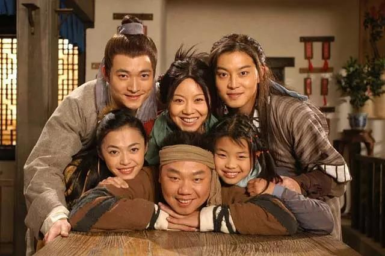 | 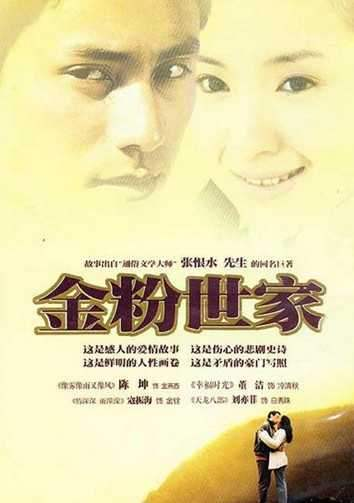 | 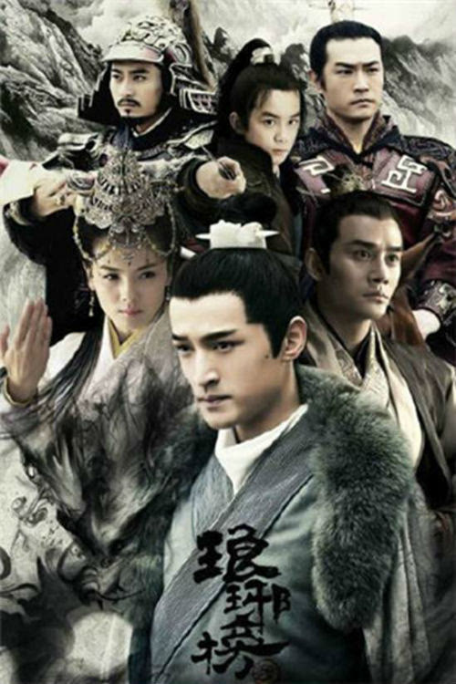 | 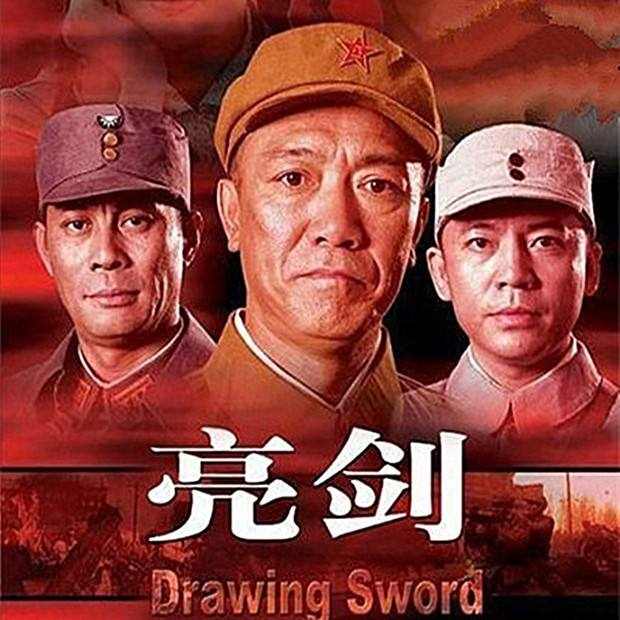 | 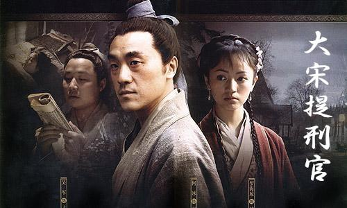 |
| 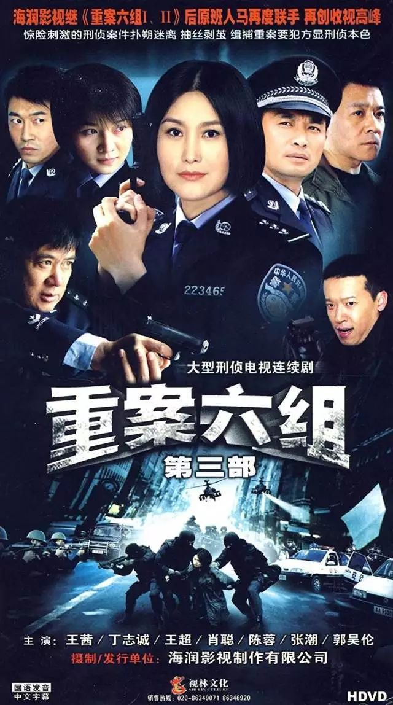 | 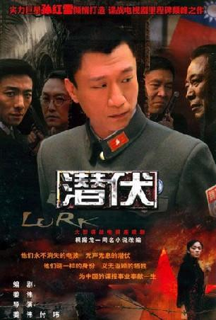 | 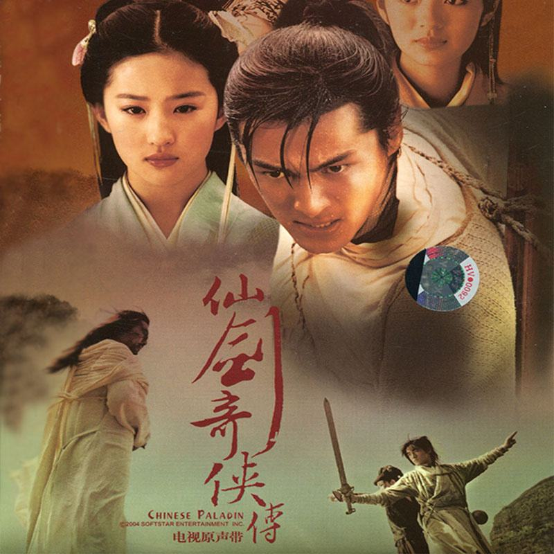 | 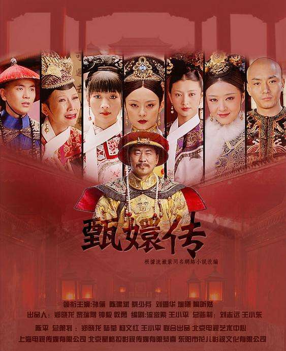 | 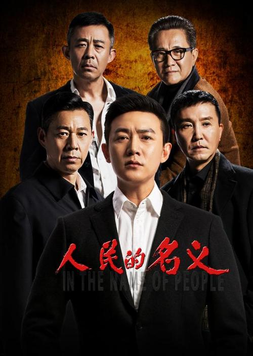 |
选自2000-2020年20年国产剧巅峰榜
烂 剧 盘 点
近几年来，很多电视剧作中，无论是青春偶像剧、玄幻小说，还是修仙言情，都不乏一些新时代流量小生以及小花担任主角，而真正的老戏骨都只能沦为配角，大多流量明星出道不久，经验不足，演技有待提高，一时间拍不出高质量作品。同时国内电视剧也缺乏优秀的电视剧剧本，只能依靠文学作品改编进行生存，众多因素造成了国产烂剧的产生。
| 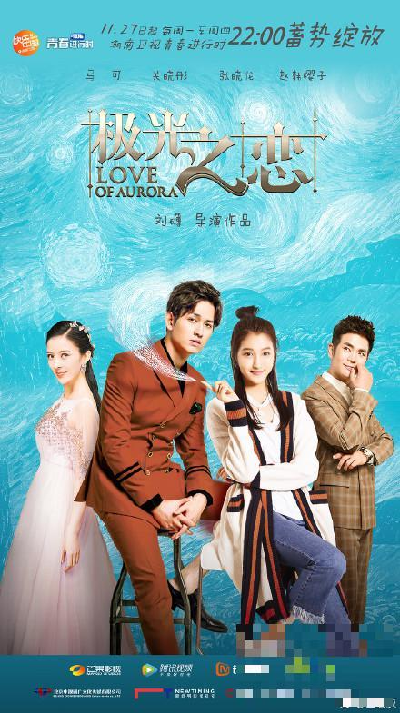 | 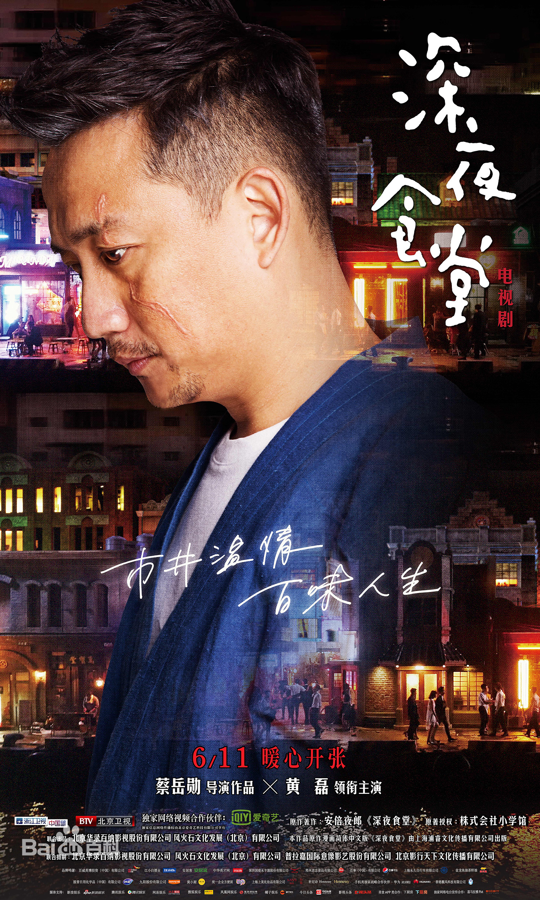 | 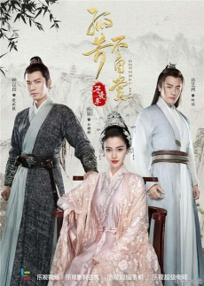 | ||
| 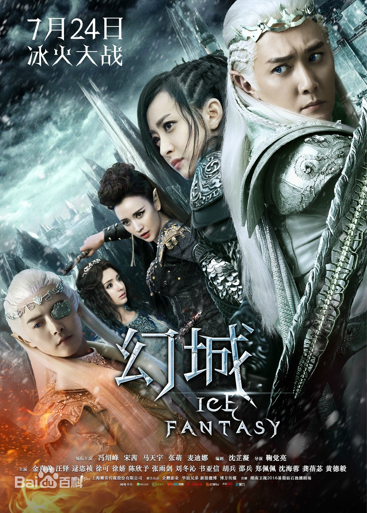 | 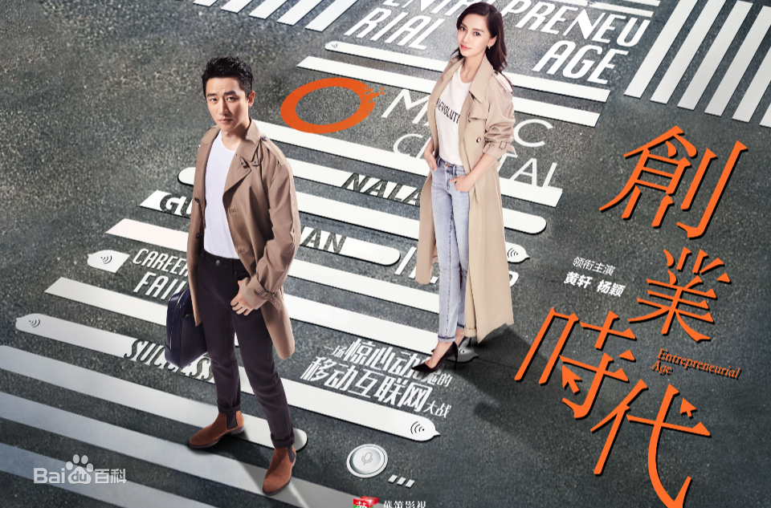 |
选自豆瓣评分国产烂剧四十部排行榜
网 剧 盘 点
电视剧的定位大多是强调老少皆宜，故事多涉及老中青三代，复合性强，照顾更广大的受众。网络剧的优势在于类型丰富，且时长较短，这其实也就是对于剧本的故事性要求更高。网络剧留给了创作者更多去细化内容的可能性。
| 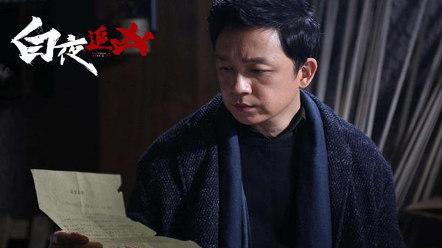 | 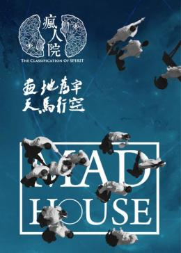 | 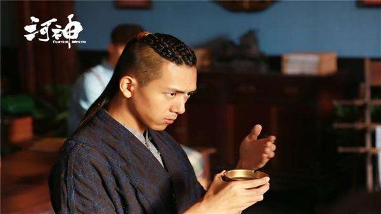 | 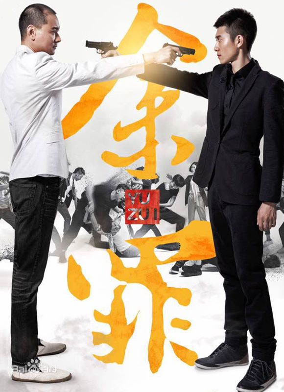 |
| 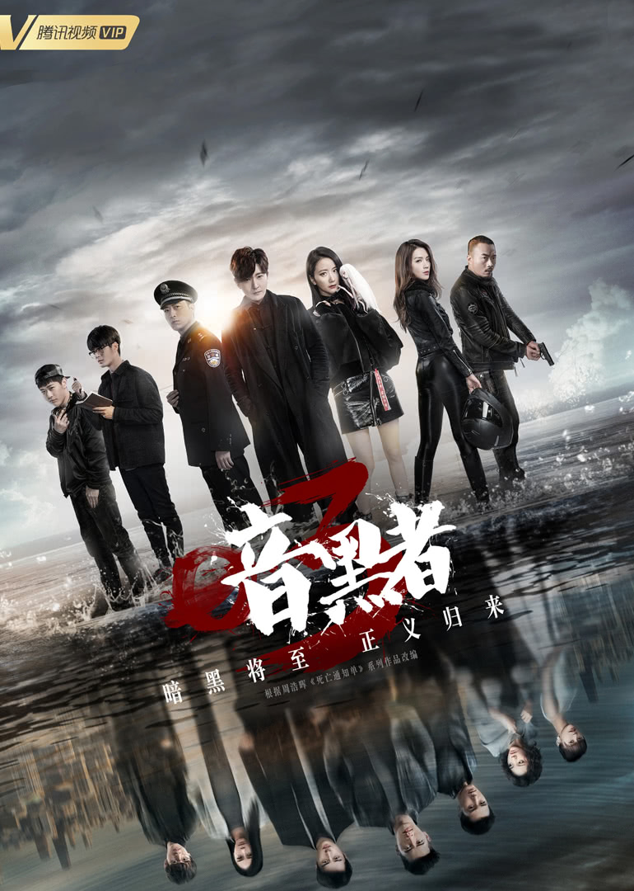 | 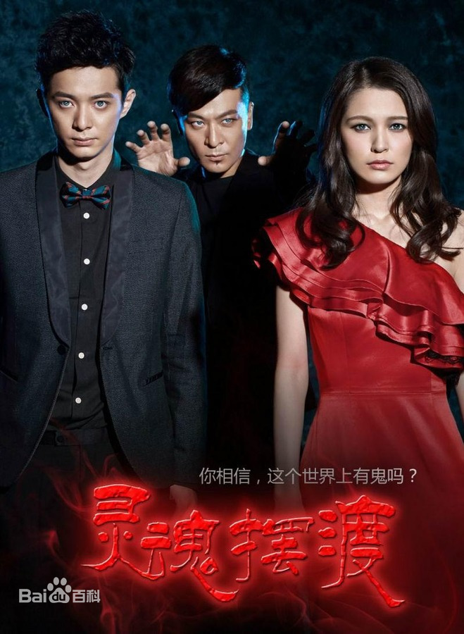 | 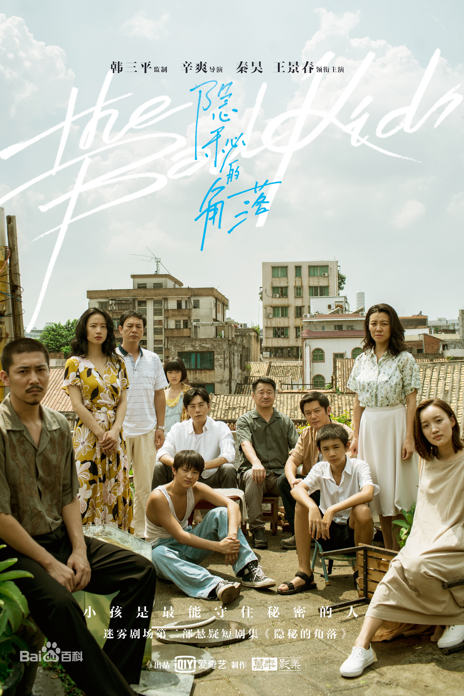 |
选自豆瓣评分8分以上的高质量网剧